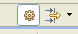

To see current status of submitted jobs open Jobs view clicking
Window < Show View < Other < Jobs:
In Jobs view you can see overview for submitted jobs, especially current status.
If you want to automatically check on grid status of running jobs, be sure that button Job updating in background active is pressed: 
Here is list of activities, which you can use to manage your jobs: